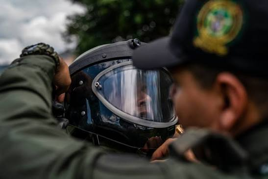
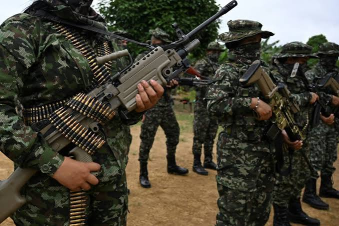
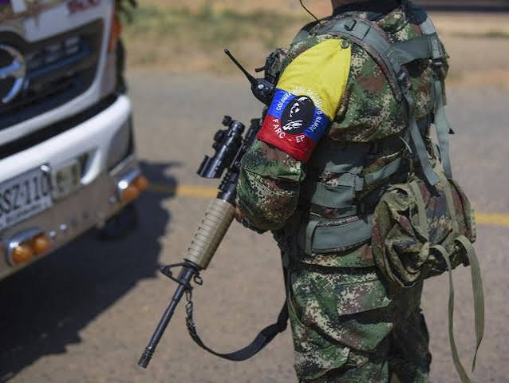
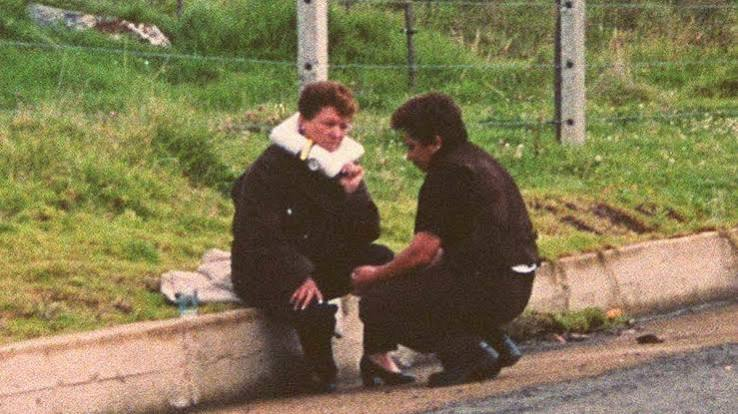

El caso del collar bomba: memoria, verdad y dignidad
Una reconstrucción documental del crimen ocurrido en Colombia el 15 de mayo de 2000, las personas afectadas, la investigación judicial y las versiones que circularon sobre su autoría.
🗓️
Fecha del crimen15 de Mayo de 2000
📍
Ubicación probadaSimijaca, Cundinamarca
⚖️
Corte Suprema de JusticiaProceso 21285 (Condena 32 años)
🕊️
Víctimas mortalesAna Elvia Cortés · Jairo H. López
El 15 de mayo de 2000, Ana Elvia Cortés de Pachón fue víctima de una extorsión violenta en la que delincuentes le colocaron un artefacto explosivo alrededor del cuello. Durante el heroico intento de desactivación por parte del subintendente y técnico de la Policía Jairo Hernando López, el artefacto estalló cobrando la vida de ambos. Este portal reconstruye los hechos con fuentes judiciales verificables y reivindica la memoria de las víctimas frente a décadas de desinformación (Corte Suprema de Justicia, 2005; El Tiempo, 2000).
Verdad Judicial Certificada
Cronología Hora a Hora
Fact-Checking y Desmentidos
Dignidad para las Víctimas
Precisión Geográfica: Simijaca vs. Chiquinquirá
Aunque popularmente se le llamó «el collar bomba de Chiquinquirá», la providencia judicial de casación certifica que ocurrió en una finca de Simijaca (Cundinamarca), en el límite con la vereda Palestina de Boyacá. El sitio no equipara automáticamente el nombre mediático con la localización formal de los tribunales (CSJ, Sala Penal, 2005).
REGISTRO DE PRENSA (MAYO 2000)
Chiquinquirá (Boyacá): Región de cobertura periodística contemporánea.Titular contemporáneo: «Collar de dinamita» (El Tiempo, 2000).
Secuencia cronológica verificada de la tragedia, complementada con el mapa de la ruta geográfica y el esquema forense interactivo del artefacto según las actas judiciales.
Línea de Tiempo Paso a Paso
Selecciona una etapa para navegar los momentos clave documentados:
MADRUGADA DEL 15 DE MAYO DE 2000PASO 1 DE 5
Invasión armada e intimidación a la vivienda rural
Hombres armados irrumpen en la vivienda rural de Ana Elvia Cortés de Pachón y su esposo en Simijaca. Intimidan violentamente a la pareja exigiendo 15 millones de pesos en efectivo, amenazando con segarles la vida.
Esquema Forense Técnico del Artefacto
Análisis forense basado en la providencia judicial 21285 para explicar técnicamente por qué fue una trampa mortal sin recurrir a imágenes explícitas:
El collar constaba de tres secciones de tubo de PVC adaptadas anatómicamente. Uno de los compartimientos alojaba cartuchos de dinamita comercial y metralla pericialmente calculada para causar daño devastador a quemarropa.
Dictamen balístico · CSJ Proceso 21285.
Ruta Geográfica de los Hechos (Boyacá - Cundinamarca)
Mapa cartográfico táctico para comprender la cronología territorial, el corredor vial y la discrepancia entre jurisdicción y atención hospitalaria:
1. Escenario del Crimen (Simijaca, Cundinamarca)
Finca rural donde ocurrió la extorsión inicial y el despliegue del operativo policial de rescate, según el expediente judicial oficial de la Fiscalía y la Corte Suprema de Justicia.
REGISTRO FOTOGRÁFICO DE ARCHIVO Y CONTEXTO INSTITUCIONALLa labor de alto riesgo de los técnicos antiexplosivos policiales
Labor de desactivación: Traje de protección EOD empleado en intervenciones críticas.

Unidad Especializada: Preparación policial antes de maniobras de alta peligrosidad.Poder destructivo: Letalidad de artefactos improvisados utilizados por bandas comunes.
MÓDULO 3VERIFICACIÓN Y RIGOR
Contexto, Investigación y Autoría
Desmontando los mitos y las hipótesis apresuradas a través de la verdad judicial y el periodismo de verificación independiente.
Contraste Clave: Versión Inicial vs. Verdad Probada
Haz clic en cada tarjeta para contrastar lo que se dijo inicialmente con la verdad demostrada:
FASE 1: HIPÓTESIS POLÍTICA
Lo que se dijo inicialmente
Autoridades y medios de comunicación atribuyeron el crimen inmediatamente a las FARC, tensando de manera crítica los diálogos de paz del Caguán.
Realidad documental:
Fue una declaración coyuntural sin peritajes balísticos ni orden judicial que la respaldara.
FASE 2: INVESTIGACIÓN PENAL
Qué investigaron las autoridades
La Fiscalía descartó a la insurgencia y probó que se trató de una banda de delincuencia común extorsiva local.
Resultado judicial:
Condena de 32 años de prisión contra José Miguel Suárez, ratificada por Tribunal y revisada en casación.
FASE 3: FACT-CHECK & FAMILIA
Lo que puede afirmarse hoy
ColombiaCheck y La Silla Vacía concluyen que es falso atribuir el collar a las FARC; persisten dudas familiares sobre otros implicados.
Dimensión humana:
Se respeta la perspectiva y el dolor de los familiares de Jairo Hernando López expresadas a la prensa (Carranza Muñoz, 2016).

Hipótesis inicial de 2000
Conflicto y Diálogos de Paz: La acusación inicial fue usada en el debate sobre la zona de distensión del Caguán.

Chequeo de verificación
Verificación rigurosa: Organizaciones de verificación desmintieron acusaciones políticas que reviven este caso falsamente.
MÓDULO 4MEMORIA Y HUMANIDAD
Las Personas Afectadas | Ana Elvia Cortés y Jairo Hernando López
Dar centralidad a las personas afectadas, reconociendo su historia, sus familias y su dignidad, evitando reducir sus vidas al artefacto explosivo o al instante de su muerte.

Víctima de extorsión
Campesina y madre de familia
Ana Elvia Cortés de Pachón
53 años · Simijaca, Cundinamarca
Mujer campesina trabajadora y dedicada a las faenas agrícolas junto a su esposo en su pequeña parcela rural. El 15 de mayo de 2000 fue obligada por extorsionistas armados a llevar el artefacto adherido a su cuello para forzar el pago de 15 millones de pesos.
Tratamiento con dignidad: Su memoria se rescata con respeto absoluto, sin reproducir imágenes explícitas del instante mortal (CSJ, 2005).
Héroe en servicio
Subintendente de la Policía Nacional
Jairo Hernando López
31 años · Técnico Antiexplosivos
Especialista policial antiexplosivos que acudió con valentía extrema para intentar salvar la vida de doña Ana Elvia Cortés, sabiendo que el collar presentaba una letal trampa de alivio de tensión. Falleció a causa de las heridas durante su traslado aéreo.
Memoria familiar: Dejó a su esposa y a un hijo recién nacido de pocos meses. Su familia aún clama por verdad plena (Carranza Muñoz, 2016).
SANTUARIO VIRTUAL DE MEMORIA
Enciende una Luz por la Verdad y la Dignidad
Un homenaje simbólico y solemne en honor a Ana Elvia Cortés, al subintendente Jairo Hernando López y a todas las personas afectadas por la violencia extorsiva en Colombia.
1,402luces encendidas por visitantes
Cuaderno de Pensamientos y Respeto
Deja una dedicatoria:
Hace un momento
«Por la dignidad de doña Ana Elvia y el heroísmo de Jairo. La verdad prevalece sobre las mentiras.»
— Visitante desde Bogotá
Hoy
«Recordar con responsabilidad y respeto para que hechos tan atroces no se repitan jamás.»
— Colectivo de Memoria Histórica
Ayer
«El deber ético de la memoria frente a la desinformación es un compromiso ciudadano.»
— Estudiante de Periodismo
MÓDULO 5HEMEROTECA Y FACT-CHECK
Medios, Sociedad y Desinformación
Análisis de cómo se construyó la narrativa de prensa en mayo de 2000, cómo se corrigieron los errores y cómo los chequeadores descubrieron el uso engañoso de fotos de ficción.
CASO DE VERIFICACIÓN VISUAL FORENSEAFP Factual · ColombiaCheck · La Silla Vacía
La Foto Viral de la Película PVC-1 vs. La Realidad
Durante años circuló en redes sociales una imagen de una mujer con el artefacto adhesivo afirmando que era la fotografía auténtica de doña Ana Elvia Cortés segundos antes de su muerte.
Desmentido oficial de los verificadores:
Agencias de verificación internacional (AFP Factual) y portales de fact-checking colombianos demostraron que la imagen corresponde a la actriz Mérida Urquía en una escena de la película de ficción PVC-1 (estrenada en 2007) (AFP Factual, 2026; Proimágenes Colombia, 2007).
RECREACIÓN CINEMATOGRÁFICAActriz Mérida Urquía (Película PVC-1, 2007) · NO ES LA VÍCTIMA REAL
Lección ética: Las obras dramáticas ficcionales no deben viralizarse como registros probatorios reales.
Hemeroteca Digital de Archivo
Explora artículos históricos, rectificaciones de prensa y chequeos independientes:
El TiempoCobertura 2000
17 de mayo de 2000
«El collar explosivo, peor que el secuestro»
Primeras crónicas tras la tragedia e impacto inicial en los diálogos del Caguán.
El TiempoRectificación
28 de mayo de 2000
«Collar bomba, acto de bandas»
Autoridades reconsideran acusaciones a las FARC al hallar pistas de delincuencia común.
El EspectadorMemoria Familiar
14 de mayo de 2016
«El otro muerto del collar bomba»
Crónica de D. Carranza Muñoz que rescata la memoria del subintendente Jairo Hernando López.
ColombiaCheckFact-Check
27 de enero de 2022
«Collar bomba fue delincuencia común...»
Ratificación con fallos de la Corte Suprema descartando la autoría guerrillera.
AFP FactualChequeo Visual
7 de abril de 2026
«El caso del collar bomba y la foto de una actriz»
Identificación forense del fotograma de Mérida Urquía en PVC-1 difundido engañosamente.
La Silla VacíaDetector
21 de octubre de 2026
«La justicia probó que fueron delincuentes comunes»
Recapitulación histórica frente al debate electoral y la verdad procesal inalterable.
MÓDULO 6VERDAD PROCESAL
Justicia y Memoria | Actuaciones Judiciales
El proceso penal contra los responsables, la revisión en la Sala de Casación Penal de la Corte Suprema y el respeto a las dudas de las familias.
Fallo en Casación · Proceso 21285 (25 de octubre de 2005)
La Sala de Casación Penal de la Corte Suprema de Justicia resolvió la demanda interpuesta contra la condena a 32 años de prisión contra José Miguel Suárez. La justicia acreditó penalmente una extorsión ejecutada por delincuencia común con artefacto explosivo en tubo de PVC.
Los periódicos transitaron desde titulares acusatorios inmediatos en mayo de 2000 hacia crónicas de rectificación judicial en 2002 y 2003, documentando la confirmación de la pena privativa de la libertad por el Tribunal Superior de Cundinamarca.
Perspectiva y Preguntas Abiertas de los Familiares
En reportajes como el de El Espectador (2016), los seres queridos del subintendente Jairo Hernando López manifestaron desconfianza sobre si en el proceso judicial se castigó a todos los autores intelectuales, manteniendo un reclamo digno de verdad plena.
MÓDULO 7ÉTICA Y CIUDADANÍA
Reflexión | Memoria y Responsabilidad
Cinco preguntas pedagógicas para dialogar sobre la violencia extorsiva, el rigor ético del periodismo y la defensa de la dignidad humana.
Compartir imágenes morbosas o hipótesis sin corroborar revictimiza a las familias. La ciudadanía informada debe exigir verificación previa antes de replicar cualquier contenido.
Las primeras declaraciones gubernamentales en situaciones de crisis pueden estar erradas. Rectificar con transparencia es la base de la verdad histórica y la credibilidad democrática.
Recordando sus nombres, sus vidas de campo, sus hijos y su vocación de auxilio. Las personas no son el arma homicida ni una imagen sensacionalista.
La sentencia fija la verdad jurídica demostrada en juicio, mientras que las dudas familiares reflejan la herida humana no resuelta y el reclamo por esclarecimiento integral.
Al dotar a la sociedad de anticuerpos contra la manipulación electoral y el engaño digital, reconociendo el valor de los archivos y los derechos de las víctimas.
MEMORIA CON VERDAD·INFORMACIÓN CON RESPONSABILIDAD·DIGNIDAD PARA LAS VÍCTIMAS
MÓDULO 8TRANSPARENCIA DOCUMENTAL
Fuentes, Método y Créditos
Bibliografía completa bajo normas APA (7.ª edición) con hipervínculos funcionales y tabla de atribución de archivos.
NORMA APA 7.ª EDICIÓN
Bibliografía Documental Verificada
13 Fuentes Indexadas
AFP Factual. (2026, 7 de abril). El caso del “collar bomba” en Colombia no fue atribuido a las FARC; y la foto viral es de una actriz.https://factual.afp.com/doc.afp.com.A6ZK7ZQ